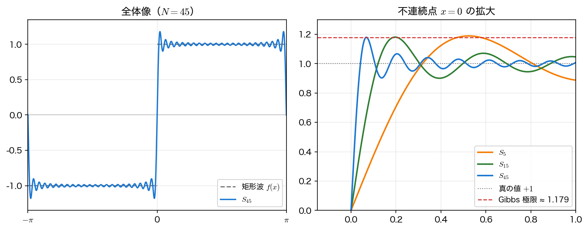

パーセバルの等式と Gibbs 現象
前ページでは、フーリエ係数の求め方と、部分和 \(S_N\) が \(N\) を増やすと矩形波に近づく様子を見た。一般の \(f\) についても、\(N\) 次までの和 \(S_N(x)=\dfrac{a_0}{2}+\sum_{n=1}^{N}(a_n\cos nx+b_n\sin nx)\) を 部分和 と呼ぶ。本ページでは、\(\lvert f\rvert^2\) の積分と係数の二乗和を結ぶ パーセバルの等式 と、不連続点の近くで部分和が \(f\) を行き過ぎる Gibbs 現象 を扱い、後者を Python で観察する。
パーセバルの等式
フーリエ係数と関数の「大きさ」を結ぶ重要な等式が パーセバルの等式（Parseval's identity） である。\(f\) を 実数値（かつ \(\lvert f\rvert^2\) が 1 周期で積分できる）とすると
が成り立つ。複素数値の \(f\) まで含めるなら、右辺は \(\lvert a_n\rvert^2+\lvert b_n\rvert^2\) としなければならない（例えば \(f=e^{ix}\) では \(a_1=1,\ b_1=i\) となり、\(a_1^2+b_1^2=0\) では左辺 \(2\) と合わない）。もっとも、複素形式の \(\sum\lvert c_n\rvert^2\) は実数値・複素数値を問わずそのまま使える。
左辺は 1 周期にわたる \(\lvert f\rvert^2\) の積分、右辺は各周波数成分のパワーの総和であり、「エネルギーは周波数成分に分配される」という物理的に自然な主張になっている（次回以降のスペクトル解析の基礎）。
規格化には注意する。周期 \(2\pi\) にわたる 平均パワー は \(\frac{1}{2\pi}\int_{-\pi}^{\pi}\lvert f\rvert^2dx\) であり、上式の左辺はその \(2\) 倍にあたる。平均パワーの形で書けば
となる。以下では \(\frac1\pi\) で規格化した最初の形を使う。
\(\cos^2 x\) で確かめる
\(f(x)=\cos^2 x\) とする。まず右辺を求める。半角の公式より
である。フーリエ級数 \(\frac{a_0}{2}+\sum_{n=1}^{\infty}(a_n\cos nx+b_n\sin nx)\) と見比べると \(a_0=1\)、\(a_2=\frac12\)、ほかの係数は \(0\) である（係数の積分公式に代入しても、直交性から同じ値になる。有限個の三角関数の和で書けたら、それがそのままフーリエ級数である）。よって右辺は
となる。次に左辺を求める。\(\lvert f\rvert^2=\cos^4 x\) を半角の公式で展開すると
である。最後の項にもう一度半角の公式 \(\cos^2 2x=\frac{1+\cos 4x}{2}\) を使うと、\(\cos^4 x=\frac38+\frac12\cos 2x+\frac18\cos 4x\) となる。\(\cos 2x\) と \(\cos 4x\) は \([-\pi,\pi]\) で積分すると \(0\) なので
となり、右辺の \(\frac34\) と一致する。
Gibbs 現象
部分和 \(S_N\) で不連続点の近くを拡大すると、\(f\) を 行き過ぎる（オーバーシュートする） 突起が見える。驚くべきことに、この突起の高さは \(N\) を大きくしても 減らない。これを Gibbs 現象（Gibbs phenomenon） と呼ぶ。
具体的には、不連続点を \(x_0\) とし、そこでの右側の極限を \(f(x_0^+)\)、左側の極限を \(f(x_0^-)\)、跳びを \(J=f(x_0^+)-f(x_0^-)\) と書く（矩形波の \(x_0=0\) では \(f(0^+)=+1\)、\(f(0^-)=-1\)、\(J=2\)）。以下では 上向きの跳び \(J>0\) を仮定する。このとき \(S_N\) の不連続点右側のピークは \(N\to\infty\) で
に近づく。第1項は跳びの上端と下端のちょうど真ん中の高さ（中点）である。超過分は跳びの大きさ \(\lvert J\rvert\) の約 8.95%（\(\frac{1}{\pi}\mathrm{Si}(\pi)-\frac12 \approx 0.0895\)、\(\mathrm{Si}\) は正弦積分）である。\(J<0\)（下向きの跳び）なら同じ式は右側の谷を与え、\(f\) を下へ行き過ぎる。いずれにせよ行き過ぎの大きさは \(\lvert J\rvert\) に比例する。
矩形波（\(J=2\)、中点 \(0\)）では、ピークは \(N\to\infty\) で \(1.17898\ldots\) に近づき、真の値 \(+1\) を約 \(0.179\)（跳びの \(\approx 8.95\%\)）だけ超える。突起の 位置は不連続点に近づき、幅は \(\sim 1/N\) で狭くなるが、高さは残り続ける。
Python で観察する
import numpy as np
import matplotlib.pyplot as plt
def partial_sum(x, N):
s = np.zeros_like(x)
for n in range(1, N + 1, 2):
s += np.sin(n * x) / n
return (4 / np.pi) * s
# 不連続点 x=0 の近くを拡大し、N を変えてピークを測る
xz = np.linspace(1e-4, np.pi / 2, 200000)
for N in [5, 15, 45, 199]:
peak = partial_sum(xz, N).max()
overshoot = (peak - 1) / 2 * 100 # 跳び幅 2 に対する超過率 [%]
print(f"N={N:3d}: peak={peak:.5f}, overshoot={overshoot:.3f}%")
実行すると、ピークは \(N\) を増やしても約 \(1.179\) に張り付き、超過率は 約 9% から減らない（\(N=5\) で 9.42%、\(N=45\) で 8.96%、\(N\to\infty\) で 8.949%）。
N= 5: peak=1.18836, overshoot=9.418%
N= 15: peak=1.18028, overshoot=9.014%
N= 45: peak=1.17914, overshoot=8.957%
N=199: peak=1.17899, overshoot=8.949%

本講義との接続
Gibbs 現象は、信号処理で急峻な変化を扱うときの実務的な注意点（リンギング）でもある。
まとめ
- パーセバルの等式 は、\(\lvert f\rvert^2\) の積分が各周波数成分のパワーの和に等しいことを述べる（平均パワーで書くなら両辺を \(2\) で割る）。
- Gibbs 現象：不連続点近傍のオーバーシュート（跳びの約 9%）は \(N\to\infty\) でも消えない。突起は不連続点に寄って幅が狭くなるが、高さは変わらない。
ここまでで、フーリエ級数の「組み立て方」と、パーセバルの等式・Gibbs 現象という二つの性質が分かった。演習問題では、のこぎり波の係数を求めて部分和を描いてみよう。